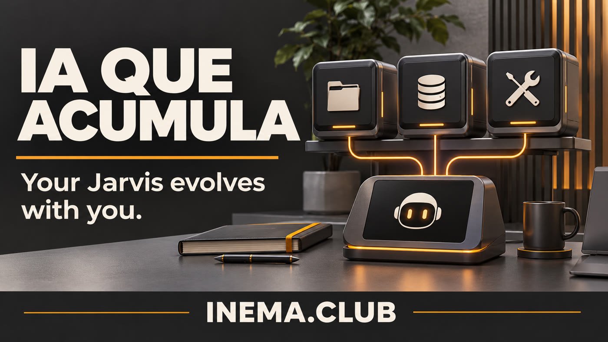
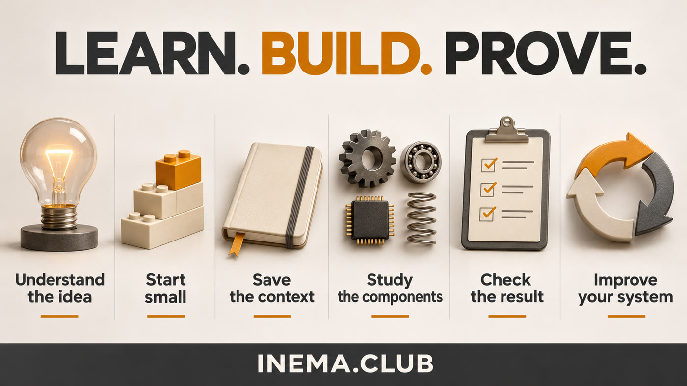

LIVES11 · Vision and strategy
Are you learning AI to build or to depend on it?
Audio and captions in Portuguese
Watch on YouTubeWhat you learn today can become a capability of your own tomorrow. With an evolving Jarvis, you bring together context, make use of good components, and improve your system without starting over with every tool.

A Jarvis is a personal AI assistant that you organize for your work. IA que acumula is a study and practice kit for anyone who wants to start their own assistant or improve the agents they already use. It helps you save instructions in files, study one item in a project folder, and check a small task. That way, you can reuse your setup when you switch tools. The videos explain the idea before the technical details; the exercise uses an agent you already have.

Choose the starting point that suits you. There are six independent videos, all in Portuguese, organized in two rounds. Each one stands on its own.
LIVES11 · Vision and strategy
Audio and captions in Portuguese
Watch on YouTubeLIVES7 · Agents in practice
Audio and captions in Portuguese
Watch on YouTubeLIVES3 · Starting from scratch
Audio and captions in Portuguese
Watch on YouTubeThe competition for professionals after 2027 is Nei’s view of a possible scenario, with no guarantee of employment or income.
LIVES11 · Vision and strategy
Audio and captions in Portuguese
Watch on YouTubeLIVES7 · Agents in practice
Audio and captions in Portuguese
Watch on YouTubeLIVES3 · Starting from scratch
Audio and captions in Portuguese
Watch on YouTubeBuilding your own system means understanding the role of its components and learning how to combine them. You can use existing projects and third-party services. You don’t need to write every library or train a model from scratch.
Visual simulation: the button switches the agent and keeps the same context. This demonstration does not run artificial intelligence.

Start with a task you know. In the kit’s fictional example, Ana needs to review a proposal by sexta. Bruno needs to confirm a meeting, but did not provide a deadline.
Ask for a list with a person, task, and deadline. Explain what needs to appear before choosing a tool.
Save the context and instructions in readable files. When you find a useful component, study its origin, license, and a small adaptation.
Bruno’s deadline must remain pendente. If the agent invents a date, correct the rule and rerun the test. Only a confirmed improvement goes into memory.
Show a well-defined problem, a working demonstration, and how the result was checked. Compare the entire process, including time spent reviewing and correcting. The kit’s executive brief helps organize this pilot; only report gains after measuring them.
You don’t need this section to understand the videos and the proposal above.
The program runs locally, with no external dependencies or network calls. It organizes the work of an existing agent; it does not include an AI model or the integrations of a complete Jarvis. A repository is a project folder; a hash identifies a file’s contents and is used to recognize the version that was checked.
To run the kit, use Python 3.10 or later and a terminal. For the AI portion, use an agent you already have access to. The commands below use python3, which is common on Linux and macOS; on Windows, replace that beginning with py -3. The kit program does not require an API key.
Download the ZIP, extract it, and open a terminal in the folder containing jarvis.py. If you prefer to use Git, these commands get the same code:
git clone https://github.com/inematds/ia-que-acumula.git
cd ia-que-acumulaChoose a new folder. The program refuses to overwrite an existing destination. The second command creates a request with context you can read and give to your agent.
python3 jarvis.py novo meu-jarvis
python3 jarvis.py pacote meu-jarvis > pedido.txtOpen the meu-jarvis folder in your agent, or copy the contents of pedido.txt into the chat you already use. Ask: read AGENTS.md and TAREFA.md, organize the tasks, and save the result in resultado.md. If you’re using a chat on its own, copy the response into a file named resultado.md inside the meu-jarvis folder. Then check the two lines against the source.
Ana | revisar proposta | sexta
Bruno | confirmar reunião | pendenteThe names, tasks, and values sexta and pendente are literal values from the exercise and remain in Portuguese in all three languages.
Run the checker after saving the response in resultado.md. It needs to find Ana, Bruno, sexta associated with Ana, and pendente associated with Bruno. Exit code 0 means it found these markers; this is not a general validation of any AI response.
python3 jarvis.py provar meu-jarvis meu-jarvis/resultado.mdUse a repository already on your machine. Replace /caminho/do/repo with the actual path. The record waits for review; ask the agent to explain the requirements, license, and a small change before installing or running anything.
python3 jarvis.py incorporar meu-jarvis /caminho/do/repo --nome ferramenta-1 --aprendizado "Guardar uma prova antes de incorporar"The seven tests check file preservation, context package, incorporation without execution, safe names, a repository without a README, a symbolic link, and the positive/negative example. The published package was also extracted and run in a clean folder.
python3 -m unittest -v test_kit.pyThe method and scenarios are Nei Maldaner’s own perspective. INEMA.club brings together public courses and projects; INEMA.PRO organizes learning paths and curation. The six videos were made for the requested channels: Lives11, Lives7, and Lives3, two for each.